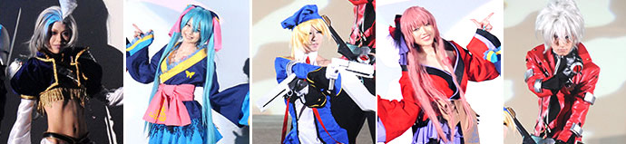

将于一般公开日实施的COSPLAY（角色扮演）计划
在东京电玩展2012的一般公开日中，将“Yasuragi Mall”（3展厅和4展厅之间）的一部分以及会场外南侧（靠海一侧）的一部分作为COSPLAY区域。
此外，自9月22日（周六）18:30起在8展厅的活动舞台上，将举办“Cosplay Collection Night @TGS”（主办∶Cure）。恭候各位COSPLAY表演者到场参加。
Cosplay Collection Night @TGS presented by Cure

本活动是由日本最大的COSPLAY社区站点“Cure”所举办的“动感COSPLAY”舞台秀。在此能够享受COSPLAY时装秀、舞蹈、机器人COSPLAY大游行等全新的COSPLAY魅力。活跃在日本、全世界，深具感召力的COSPLAY表演者亦齐聚一堂，前来参加演出。在这90分钟里,可以欣赏到从广为人知的角色到罕见角色的COSPLAY，非常值得一看。请务必欣赏带给人们全新感受的COSPLAY秀。
举办概要
| 时间 | 9月22日（周六）18:30～20:00 |
|---|---|
| 地点 | 幕张国际展览中心 8展厅 活动舞台 |
| 参加演出者 | COSPLAY表演者：KANAME☆、丽华、YUIMINO、Onnies（泰国）、Heyleydia（泰国）、士魂队、CosPAfo等约200人
制作人：Inui Tatsumi（Cure） MC：Yunmao Ayakawa DJ＆MC：WAN（Cosplay Heaven／OTA-RHYTHM／八百万机关） VJ：深泽俊树（RawLight／HighLIKE） |
| 主办 | Cure（NHN Japan株式会社）http://curecos.com/ |
参加办法
如欲参加“Cosplay Collection Night”，需持号码券入场。号码券将于9月22日（周六）在“Yasuragi Mall”（幕张国际展览中心里3展厅和4展厅之间的空间）的“COSPLAY区域”发放。

※达到特定人数时，号码券将停止发放。
※不限COSPLAY表演者，任何人均可参加。
※东京电玩展2012的入场时间截止到16：00。如欲参加，请务必在16：00之前进入东京电玩展2012会场。
活动舞台入场流程
17:00展示结束后，请在7展厅的“饮食角”附近的集合处会合。18:00左右将在工作人员的引导下进入8展厅的活动舞台。
※入场时我们将确认号码券，因此请务必将号码券拿在手上。
※仅限Cosplay Collection Night参加者在22日21：00之前能够使用7展厅的COSPLAY更衣室。
※贵重物品请务必随身携带、自行保管。
※会场内如发生贵重物品及随身携带物品的被盗、破损等事件，主办方不承担任何责任。
致COSPLAY表演者们（请大家合作的要点以及注意事项）
详情请点击［致COSPLAY表演者们］]查看。